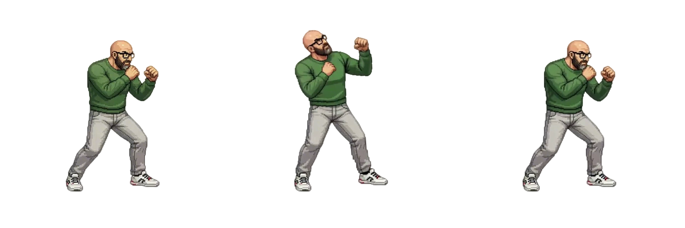
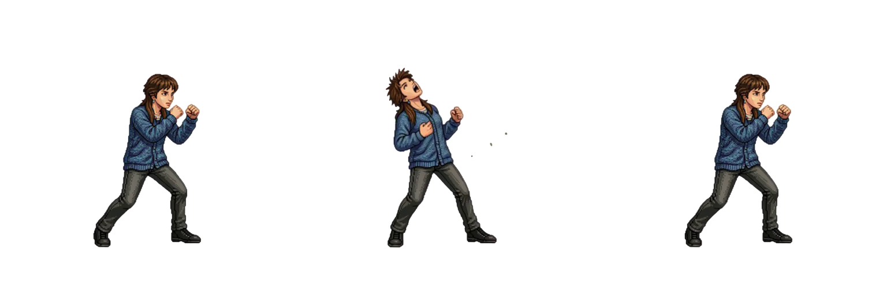
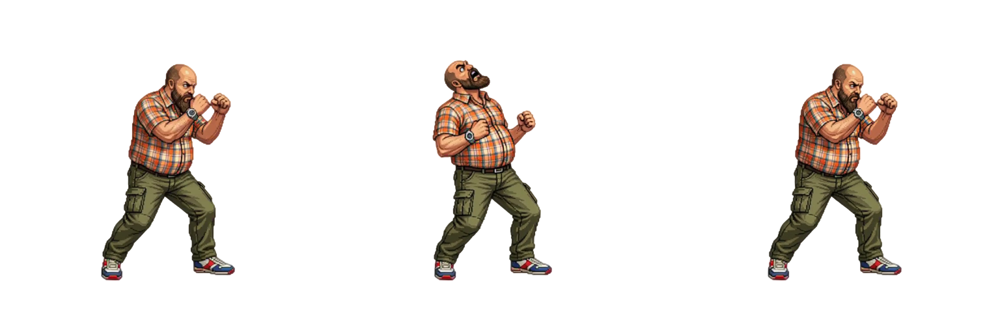
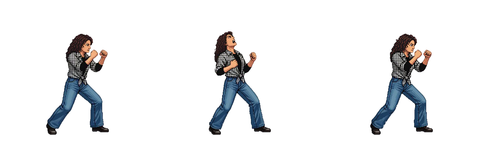
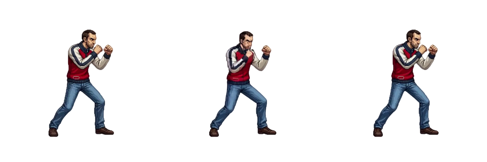
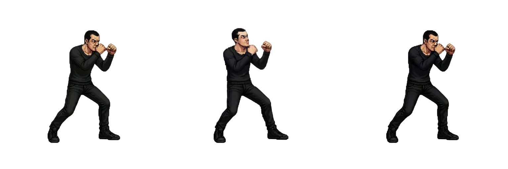
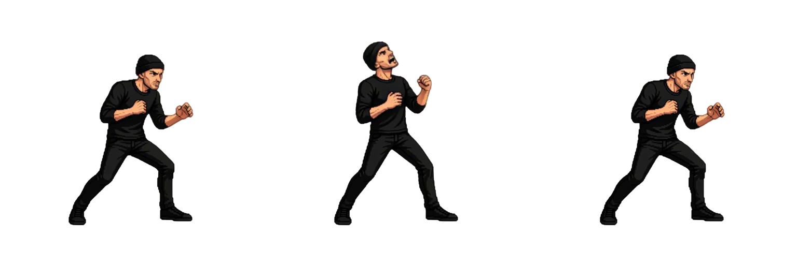
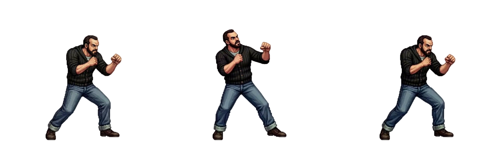
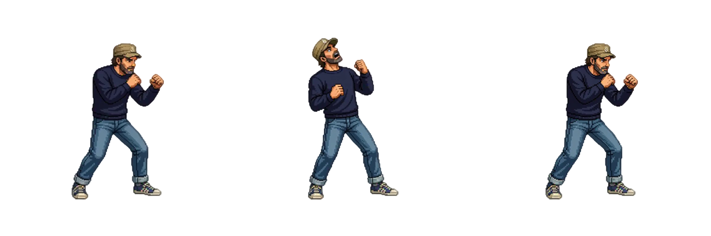

Timing Hurt
Aggiornamento: 2026-11-19. Integrati 9 personaggi. Ogni sequenza dura 500 ms (0,50 s) a velocita 1x, con durata uniforme per fotogramma. I diversi FPS compensano il numero di frame di ciascuno spritesheet.
Riproduzione solo avanti, con reazione e recupero originali; loop predefinito come per le altre animazioni. Le tre pose mostrano inizio, meta e fine della sequenza e non rappresentano un istante di impatto sincronizzato.
Celle 512x512, scala e padding conservati. Versioni salvate accorciate quando disponibili; per Alberto intervallo salvato 0-20 incluso. Il flash bianco di Elisa e gia disegnato nello spritesheet sorgente e rimane invariato.
Scarica CSV. In Godot la durata visiva puo essere distinta dal tempo di hitstun.
| Personaggio | Inizio / meta / fine | Frame esportati / sorgente | FPS | Durata frame | Durata totale | Provenienza |
|---|---|---|---|---|---|---|
| ALBERTO |  | 21 / 25 | 42 | 23.810 ms | 500 ms | Atlascmwnf9qfb00jekqy81qu9l9yr |
| Elisa |  | 16 / 16 | 32 | 31.250 ms | 500 ms | Atlascmwng03hw00wskqy8yoxss29cWhite impact flash in source frames 6-7 preserved unchanged. |
| FABIO-CLARA |  | 12 / 12 | 24 | 41.667 ms | 500 ms | Atlascmwng4wh7010513takmy6p05d |
| FRA-TAVARONE |  | 13 / 13 | 26 | 38.462 ms | 500 ms | Atlascmwnfty4d00ux13tarpm7tn35 |
| MARSAN |  | 12 / 12 | 24 | 41.667 ms | 500 ms | Atlascmwnfr1mt00p1xjug3ywt5uw5 |
| Oscar |  | 20 / 20 | 40 | 25.000 ms | 500 ms | Atlascmwnfltof00we29xv51pg72b3 |
| PEPPO |  | 12 / 12 | 24 | 41.667 ms | 500 ms | Atlascmwnfptwj00q6kqy8aiisk7ya |
| PIPPO |  | 16 / 16 | 32 | 31.250 ms | 500 ms | Atlascmwnfon0400r913ta7ts2w1ih |
| SBOZ |  | 12 / 12 | 24 | 41.667 ms | 500 ms | Atlascmwnfmyil00qt13ta1zl8cova |